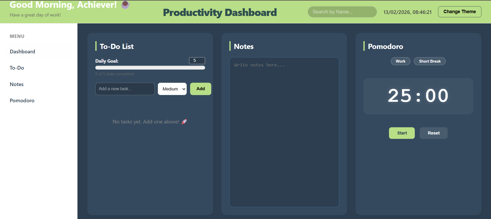

Web Application
Productivity Dashboard
An all-in-one productivity hub featuring a Pomodoro timer, prioritized To-Do list, and live weather integration. Built to help users stay focused using persistent data.
